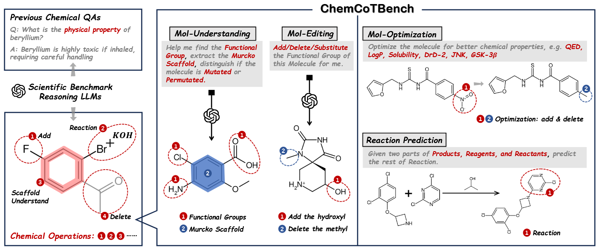
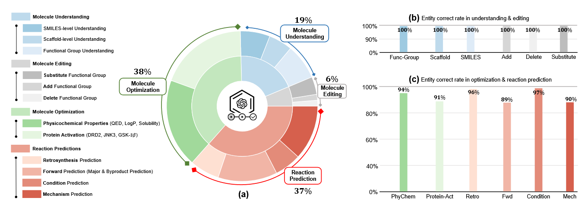
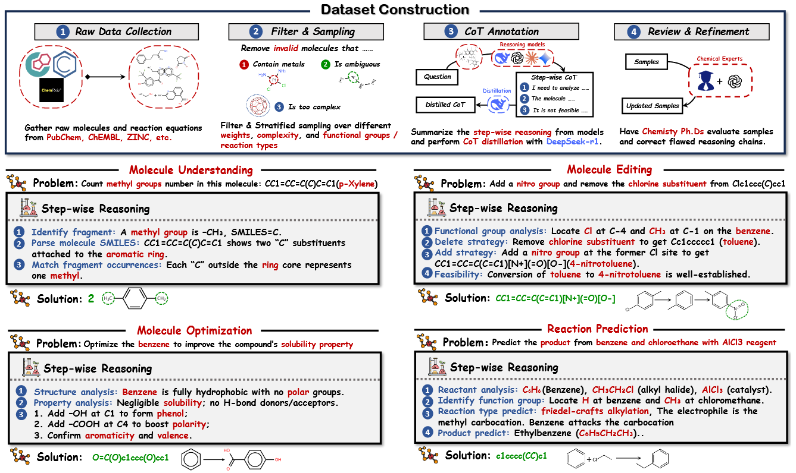
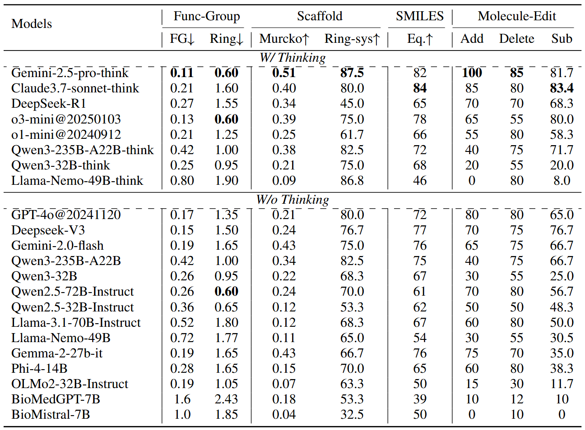

大模型的“智慧火花”已经在数学、编程等领域点燃了熊熊烈火，它们通过一步步的“思维链”展现出惊人的复杂问题解决能力。化学，这个同样充满复杂逻辑和精细操作的学科，自然也对AI的这种“慢思考”能力充满了期待。我们希望AI不仅能记住化学元素周期表，更能像经验丰富的化学家一样，面对一个全新的分子优化难题或一个复杂的反应预测，能够有条不紊地分析、推理、并最终给出解决方案。
然而，一个现实的问题是：现有的化学AI基准，大多还停留在“知识问答”层面，比如考考AI“这个分子叫什么？”或者“那个反应的产率是多少？”。这些测试虽然能反映AI的知识储备，却难以真正衡量它们进行结构化、多步骤化学推理的能力——而这恰恰是解决真实世界化学问题（如药物设计、反应工程）的关键。我们如何才能知道，AI在化学领域的“思考”究竟有多深？它们能否真正理解并执行那些需要严谨结构分析和逻辑推演的化学“运算”？
ChemCoTBench横空出世：为化学LLM打造“推理能力试金石”
针对这一痛点，今天介绍的最新研究，为我们带来了ChemCoTBench——一个全新的、旨在深度评估大型语言模型化学推理能力的基准框架。这项工作的核心亮点，可以概括为以下三点：
- 告别简单问答，聚焦“化学运算”的逐步推理：ChemCoTBench创新性地将复杂的化学问题（如分子优化、反应预测）分解为一系列可验证的、模块化的“化学操作”（例如，在分子SMILES结构上进行子结构添加、删除或替换），并要求LLM通过“思维链”的方式逐步完成。
- 高质量、面向应用的基准与数据集：ChemCoTBench不仅提供了一个包含近1500个样本、覆盖22个化学任务的基准数据集，更贡献了一个包含14000个带有高质量思维链标注的化学推理数据集（ChemCoTDataset），为训练和提升LLM的化学推理能力提供了宝贵“燃料”。
- 深度揭示当前LLM化学推理的真实水平与瓶颈：通过对多种主流LLM（包括推理增强型和通用型）的系统评估，ChemCoTBench清晰地展示了它们在复杂化学推理任务上的表现，并指出了当前开源模型和蒸馏方法在化学领域面临的挑战。
深度解读ChemCoTBench：AI是如何“一步步学化学”的？
1. 为什么需要ChemCoTBench？现有化学基准的“软肋”
论文开篇便一针见血地指出现有化学LLM基准的不足：它们往往将化学评估简化为事实回忆或简单的计算，难以模拟化学家在解决实际问题时那种迭代优化分子结构、综合考虑可合成性与毒性、或通过中间转化推断反应机理的复杂思考过程。此外，许多“考试式”的评估将知识回忆、数值计算和逻辑推理混为一谈，使得我们难以准确判断模型表现优异的真正原因，也阻碍了针对性的模型改进。
2. ChemCoTBench如何构建？从“化学运算”到“思维链”

以前的化学基准侧重于使用领域知识进行事实回忆，而我们的ChemCoTBench侧重于通过定义一组模块化化学操作来评估复杂化学问题的逐步推理。
ChemCoTBench的核心创新在于其将化学问题解决过程“算术化”和“流程化”。它借鉴了数学证明中严谨的逻辑步骤，将对分子结构的操作（如在SMILES字符串上添加、删除、替换官能团）视为一种“化学算术”，并要求LLM像解数学题一样，一步步地展现其“运算”过程。
- 任务设计：从基础到应用，层层递进
ChemCoTBench精心设计了四大类、共22个子任务，全面覆盖了化学研究中的核心挑战：
- ~~基础任务 - 分子理解~~~~：考察LLM对分子基本构成（如官能团、环系、Murcko骨架）的识别与计数能力，以及对SMILES表示等效性的判断。这如同学习化学的“字母表”和“基本语法”。~~
- ~~基础任务 - 分子编辑~~~~：评估LLM能否根据自然语言指令，准确执行对分子结构的基本编辑操作（如添加、删除、取代官能团），并保证化学结构的有效性。这好比化学中的“基本运算法则”。~~
- ~~应用任务 - 分子优化~~~~：要求LLM根据给定的源分子和目标性质（如LogP、溶解度、QED等物理化学性质，或对特定蛋白质靶点如DRD2、GSK3-β的结合亲和力），通过结构修饰来优化分子。这需要LLM理解结构与性质间的复杂关系。~~
- ~~应用任务 - 反应预测~~~~：包含正向预测（预测主产物和副产物）、单步逆合成、反应条件推荐以及反应机理理解（如下一步基本产物预测、机理路径选择）等多个方面，全面考验LLM作为“化学推理智能体”的综合能力。~~

（a）ChemCoTBench的分布分析。（b）。来自分子理解和编辑任务的样本在化学专家对化学实体的评估中取得了极高的准确性，包括官能团名称、分子名称、化学操作名称、反应信息等。c分子优化和反应预测的样本在化学专家评估中也显示出很高的准确性（>89%）。
- 高质量数据构建：LLM辅助与专家把关
ChemCoTBench的构建过程历经1800多小时的LLM辅助与化学专家联合标注。原始分子和反应数据来源于PubChem, ChEMBL, USPTO等公开数据库。通过严格的过滤和采样，确保了数据的多样性和覆盖度。最关键的是，研究者们利用SOTA推理LLM（如Gemini-2.5-pro, DeepSeek-R1）的能力，为这些化学问题蒸馏出高质量的“思维链”标注，并将其组织为模块化的化学操作。所有这些数据都经过了LLM验证器和13位化学博士候选人的多轮混合审查与精炼，确保了基准和数据集的科学严谨性。

ChemCoTPench的数据集构建流程包含四个步骤，包括原始数据收集、分子过滤和采样、思维链注释和化学专家评审和细化。我们还将四个主要任务的样本及其在推理过程中的相应模块化化学操作可视化。
3. ChemCoTBench的“大考”结果：AI化学推理，路在何方？
研究团队在ChemCoTBench上对一系列主流LLM（包括明确进行推理优化的模型和通用模型）进行了全面评估。核心发现揭示了当前LLM化学推理能力的真实图景：

- 基础能力是基石：在分子理解和编辑等基础任务上的出色表现，与在分子优化和反应预测等复杂应用任务上的成功密切相关。这验证了ChemCoTBench任务设计的层次性和合理性。
- 商业推理LLM展现优势：配备了复杂推理机制的顶尖商业LLM（如DeepSeek-R1, o3-mini）在ChemCoTBench的应用任务上，显著优于其非推理版本的对应模型。例如，在分子优化任务中，DeepSeek-R1相比DeepSeek-V3性能提升超过30%。这表明，经过RL等技术磨砺的“慢思考”能力，在与领域知识结合后，确实能带来超越简单知识检索的问题解决能力。
- 开源模型“通用推理”在化学领域“水土不服”：一个引人深思的发现是，当前一些在通用领域（如代码、数学）展现出强大“混合思维”能力的开源模型（如Llama-3.3-Nemotron, Qwen3），其高级推理能力并未有效地迁移到化学这一专业领域。在ChemCoTBench的测试中，启用这些模型的“推理模式”后，其化学任务性能与非推理模式相比并无显著提升。研究者将此归因于化学领域特定推理训练数据的严重缺乏。这一发现强烈暗示，通用的推理架构需要针对性的领域数据才能“开窍”。
- ChemCoTDataset的赋能作用 (原文Fig. 4)：
针对上述问题，研究者进一步验证了ChemCoTBench提供的大规模化学CoT数据集（ChemCoTDataset）的价值。实验表明，当利用ChemCoTDataset中的高质量、领域特定的思维链数据，通过提示增强的方式来引导开源LLM（如Qwen-2.5系列）时，这些模型的化学推理能力得到了显著且稳定的提升。这有力地证明了高质量、领域相关的推理数据对于提升LLM化学“思考”能力至关重要。有趣的是，对于较小的LLM，即使是粗略的CoT模板也能带来益处，而较大的LLM则可能因为其固有的代码/数学推理模式，需要更精细、更贴合化学逻辑的CoT引导才能充分受益。
结论与展望：ChemCoTBench——引领LLM化学推理新方向
ChemCoTBench的问世，为我们系统评估和提升大型语言模型在复杂化学问题解决方面的能力，提供了一个全新的、面向应用的、高质量的基准平台。它通过将化学问题解决过程分解为一系列模块化的“化学运算”，并强调“思维链”式的逐步推理，成功地将LLM的评估从简单的知识检索推向了更深层次的“化学思考”层面。
这项研究的核心贡献不仅在于构建了这个独特的评估框架，更在于它通过详实的实验，揭示了当前LLM（特别是开源模型）在化学推理方面存在的“数据瓶颈”，并验证了其提供的ChemCoTDataset在弥补这一短板、提升LLM化学推理能力方面的显著效果。
ChemCoTBench的出现，无疑将为未来设计和训练更懂化学、更能进行深度推理的AI模型提供重要的指导和宝贵的资源。它为我们描绘了一个LLM从“知识的搬运工”向“化学问题的解决者”和“科学创新的驱动者”转变的清晰路径。